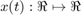
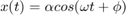
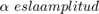
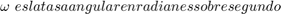
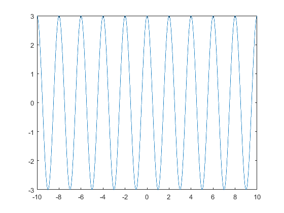
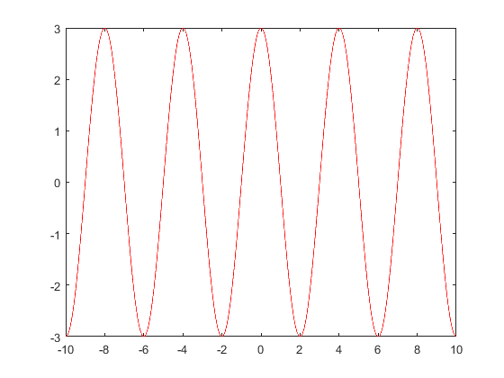
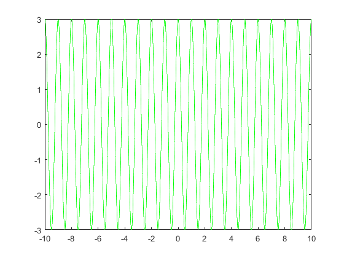
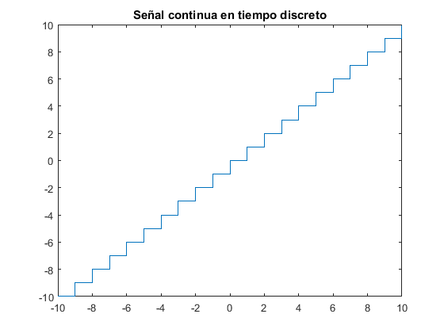
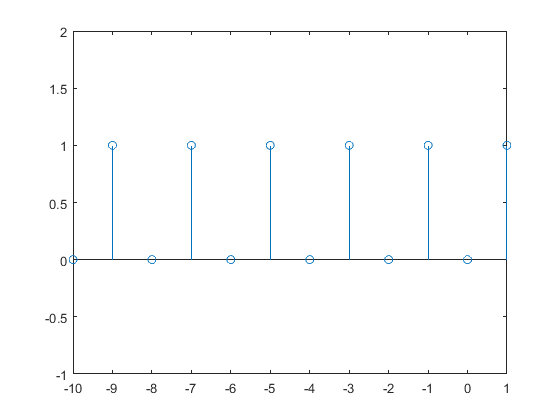

Contents
%%SEÑALES MONOCROMATICAS (Alexis Barrios) %%Las señales monocromáticas son señales analógicas, es decir, en tiempo %%continuo y valores continuos

%La señal monocromatica o sinusoidal tiene la forma:

%donde


Ejemplo1: Graficar una señal monocromática de amplitud 3 y frecuencia angular 2
Solución
clc clear close all
%hold
a=2;
alpha=3;
t=-10:0.001:10;
phase=0;
omega=2*pi/a;
s1=alpha*cos(omega*t+phase);
plot(t,s1);
 Ejemplo2: Graficar la misma señal pero con frecuencia de 0.25
a=4;
alpha=3;
t=-10:0.001:10;
phase=0;
omega=2*pi/a;
s2=alpha*cos(omega*t+phase);
plot(t,s2,'-r');
 Ejemplo3: Graficar la misma señal pero con frecuencia de 1
a=1;
alpha=3;
t=-10:0.001:10;
phase=0;
omega=2*pi/a;
s3=alpha*cos(omega*t+phase);
plot(t,s3,'-g');
 Señales contínuas en tiempo discreto
T=-10:10;
X=T;
stairs(T,X);
title('Señal continua en tiempo discreto')
 Señales contínuas en tiempo continuo
T=-10:10;
X=T;
stairs(T,X);
title('Señal continua en tiempo discreto')
Señal digital
stem(T,mod(X,2)); axis([-10 1 -1 2]);